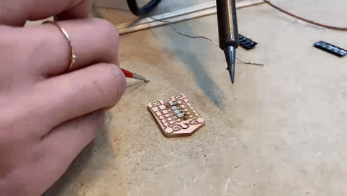
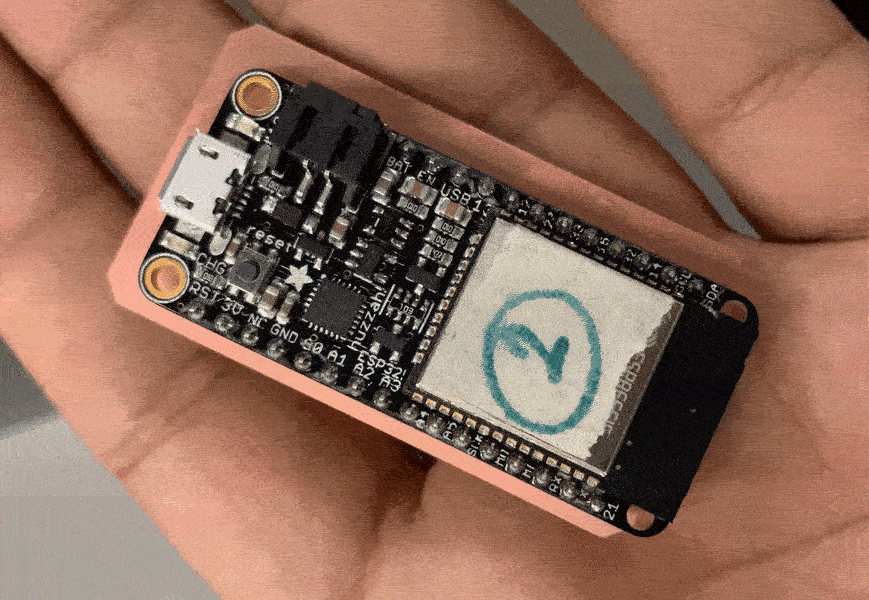
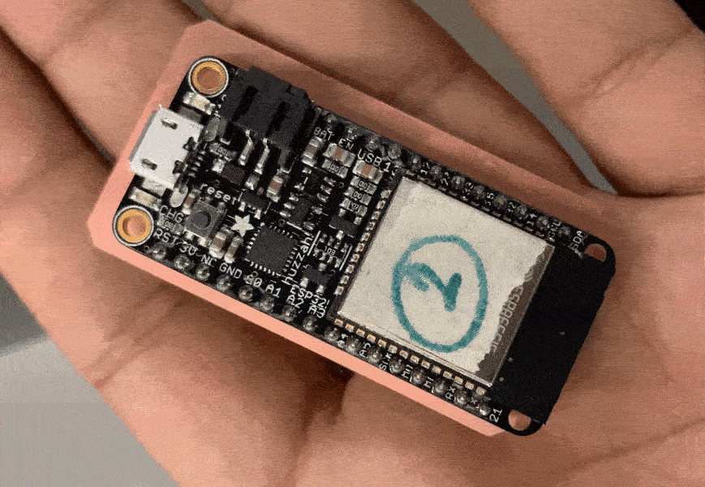

The first hands-on exposure to Electronics design and soldering happened at Fab Labs during the week 4. Topics like SMDs (Surface Mounted Devices), basic components of a PCB (Printed Circuit Board) and mass-production were discussed for contextual understanding.

The step-by-step process of designing, arranging and milling a PCB was shared and discussed in class. The process involves starting with placing the PCB on the sacrificial bed, then milling the traces, to making holes and then cutting the perimeter. You can find the brief steps involved to create the files below: 1. Visit modsproject.org 2. Programs > Roland > Absolute PCB 3. Upload .png saved in a high DPI 4. Click on ‘Invert’ to subtract the black part 5. Go to ‘Set PCB Defaults’ and click on the task 6. Go to ‘Mill Raster 2D’ and check depth and offsets (Ideal: 4) 7. Go to ‘Absolute coordinates’ and check values (Speed: 3mm/s > trace, 1.5mm/s > cutting) 8. Set Origin: 0, Job height: 10mm and Home > 0 9. Click on ‘Calculate’ for the visualiser 10. Create a link between ‘Output’ and ‘Input’ 11. Click on ‘Calculate’ again
For each stage, a different milling bit is used: Milling Traces: 1/64” Flat-end bit Making Holes: 1/32” Flat-end bit Cutting the perimeter: 1/32” Flat-end bit
For the weekly task, Ruben and I decided to used the circuiting from the Hybrid Medium Monitor which incorporates various sensors and some complexity. The circuit was arranged and made on KiCAD using available libraries and footprints.


 
